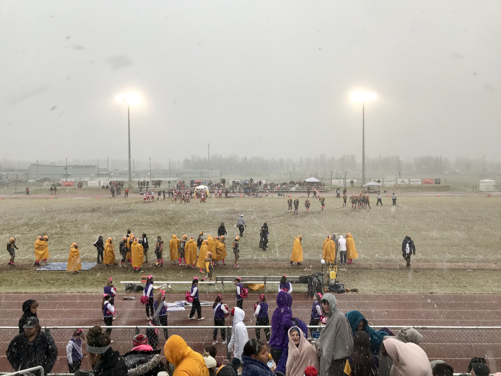

Lathrop tops West Valley 27-24 at Dog Bowl
By Laura Stickells | October 6, 2019
Snow fell through all four quarters of Saturday's annual rivalry game between West Valley and Lathrop. Photo by Laura Stickells.
With his team trailing 27-24 and 3 minutes and 52 seconds left in the game, West Valley's Jake Golden gave the Wolfpack a chance to clinch the Dog Bowl and Railbelt Conference Championship title after recovering his own perfect onside kick on the 50-yard line.
The Lathrop defense had other ideas.
After just allowing the Wolfpack offense to complete a six play 53-yard touchdown drive, the Malemute defense tightened up, forcing a turnover on downs to claim the Dog Bowl and conference title as their own for the second straight year.
“That was great team defense,” Lathrop head coach Luke Balash said about the four-and-out after the Saturday night crosstown rivalry game.
“You had pressure coming from the guys up front and you had defensive backs doing a great job of staying with their guys and being in the right spots.”
The 14th annual West Valley-Lathrop matchup, hosted this year by Lathrop, included five turnovers, four of which belonged to the Malemutes, influenced largely by the snow that fell during all four quarters, causing a slick field and slippery ball.
Lathrop quarterback Jace Henry tried not to let the conditions get to him and was largely successful. The senior rushed for 304 yards and three touchdowns, and threw for 75 yards and one touchdown.
“Jace is a heck of a ballplayer, one of the best I’ve ever coached, easily, and obviously he completely controlled the game tonight,” Balash said.
“There came a point where I said, ‘Hey, I’m just going to call your number almost every play. Is that okay?’ And he said, ‘Yeah, Coach, I got it. Put it on my back.’”
The Malemutes found themselves trailing 12-8 after Keegan Daoust intercepted a pass and returned it 50 yards for a West Valley touchdown and Wolfpack running back Justin Cummings ran in a well blocked 74-yard touchdown with 1:36 left in the first quarter.
But with 29 seconds left in the half, Henry found a way to put his team back on top before heading into the locker room.
“I warmed up my hands a little bit and we got a dry ball in and I was like, ‘well, if we are going to score, this is the perfect moment to score,’” Henry said after the game. “I just gotta make a big throw and hope he catches it.”
After a holding call pushed Lathrop back to third down and 20 on the 42-yard line, Henry dropped back, stayed patient and threw a perfect touchdown pass to Jamaal Blanchard-Davis to take a 15-12 lead.
With two more Henry rushing touchdowns coming in the second half, the Malemutes held a lead for the rest of the game, but two touchdown passes from West Valley quarterback Shaun Conwell — a 16-yarder to Avery Weston late in the third quarter and a 30-yarder to Weston with just under four minutes to go — kept the Wolfpack in striking distance.
Cummings also played an integral role in keeping his team in the game until the final turnover on downs. The senior rushed for 55 yards in addition to the 74-yard touchdown run.
Both teams entered Saturday’s contest 2-0 in conference play and had already secured berths in the Division II State Semifinals after both blowing out teams the previous week: Lathrop defeated Palmer 64-21, and West Valley took down North Pole 46-13.
But Saturday’s game prepared the Malemutes more than any blowout could.
“To have a game like this is way better than a blow out win or anything else,” Balash said. “To have our inner game tested is really important.”
After Saturday’s win, the Malemutes earned the No. 1 seed and home field advantage in the semifinal game against the Eagle River Wolves. The Wolves, 2-1 in conference play and 4-4 overall, are coming off a 35-8 home loss to Chugiak.
The Wolfpack will travel to face the Soldotna Stars, who completed a perfect regular season on Saturday with a 57-12 win over Kenai Central. SoHi has won seven consecutive Division II state championships and has now won 14 straight Northern Lights Conference titles.
Kickoff for the Wolfpack’s game against the Stars is set for 5 p.m. Friday. The Malemutes game against the Wolves will be played at 1 p.m. Saturday.